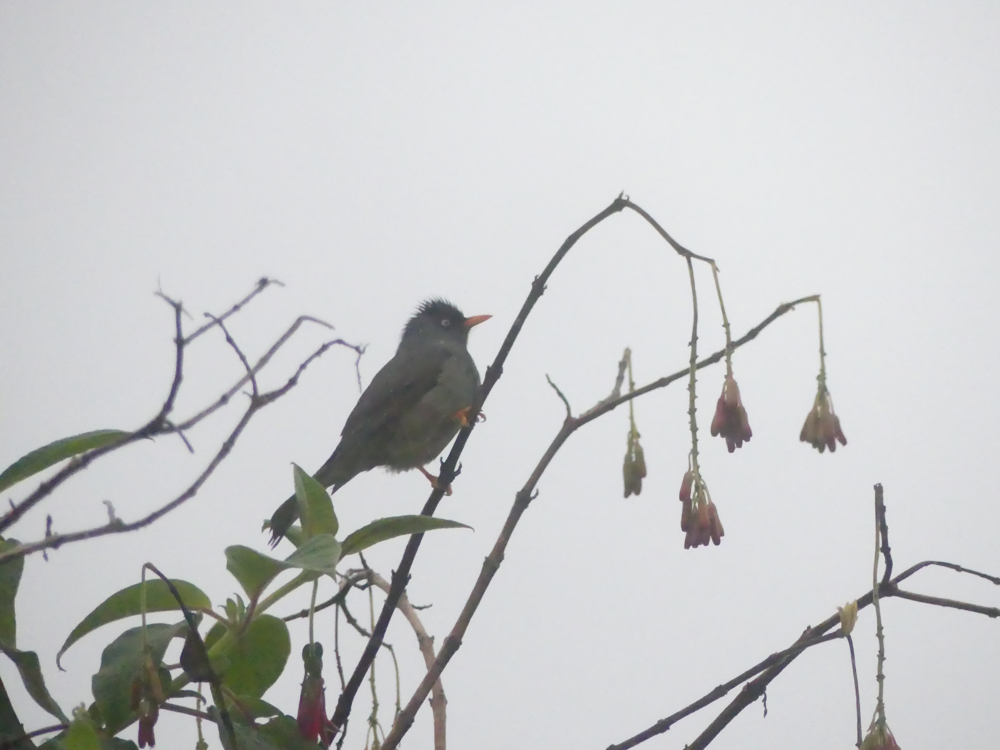

Reunion Island Endemic Birds

I am an amateur ornithologist, I really enjoy taking pictures of birds during my hike.
All the pictures you will see here were taken by me. I am sorry, all the endemic birds will not be displayed because
I still miss pictures for 2 of them, the Tuit-tuit and the "Petrel de Barrau
If you see 2 pictures, youu can hover over them to change the text (it will indicate the sex of the bird on the picture).
The Réunion stonechat (Saxicola tectes) is a species of stonechat, endemic to the island of Réunion. This small passerine bird is common in clearings and open mountain bushlands there up to 2600 metres above the sea level, including in the plains around Piton de la Fournaise. You can see on the picture a male/female stonechat.


The Réunion bulbul (Hypsipetes borbonicus) is a species of the bulbul family of passerine birds. It is endemic to Réunion. The Réunion bulbul is primarily frugivorous. In February and March, it moves from areas of higher elevation, where it inhabits humid secondary forests, to lower valleys to feed on ripe guavas. Nectar, insects and small lizards enrich its range of food. Although assessed as a species Near Threatened by the IUCN, the Réunion bulbul is no longer a common bird, mainly due to poaching and competition from the introduced red-whiskered bulbul. In the earlier days of the settlement of Réunion it was hunted for food on a large scale, and was considered as tasty as the ortolan bunting (Emberiza hortulana). As late as the 1970s it was hunted excessively. It is also kept as a pet.

The Réunion harrier or Réunion marsh harrier (Circus maillardi) is a bird of prey belonging to the marsh harrier group of harriers.
It is now found only on the Indian Ocean island of Réunion, although fossil material from Mauritius has been referred to this species.
It is known locally as the papangue or pied jaune. The Malagasy harrier (C. macrosceles) of Madagascar and the Comoro Islands was previously
treated as a subspecies of this bird but is increasingly regarded as a separate species. The Réunion harrier appears to be declining in numbers
and it is classed as an endangered species.
It is about 42–55 cm long; the female is around 3–15% larger than the male. The male has a blackish head and back with white streaks.
The underparts, underwings and rump are white and the tail is grey. The wings are grey and black with a white leading edge.
Females and immatures are dark brown with a white rump and barred tail.
The birds are mostly silent except during the breeding season when they give a chattering threat call, a wailing courtship
call and chuckling food-associated calls.[2]
The Malagasy harrier is larger and paler with longer wings and legs.
You can see on the picture a male/female harrier.


The Réunion olive white-eye (Zosterops olivaceus) is a species of bird in the family Zosteropidae. It is found on Réunion. Its natural habitats are boreal forests and subtropical or tropical high-altitude grassland. In 1760 the French zoologist Mathurin Jacques Brisson included a description of the Reunion olive white-eye in his Ornithologie based on a specimen that had been brought to Paris from Île Bourbon (now Réunion), but which Brisson mistakenly believed had been collected in Madagascar. He used the French name Le grimpereau olive de Madagascar and the Latin Certhia Madagascariensis Olivaceus. Although Brisson coined Latin names, these do not conform to the binomial system and are not recognised by the International Commission on Zoological Nomenclature. When in 1766 the Swedish naturalist Carl Linnaeus updated his Systema Naturae for the twelfth edition, he added 240 species that had been previously described by Brisson. One of these was the Reunion olive white-eye. Linnaeus included a brief description, coined the binomial name Certhia olivacea and cited Brisson's work. He followed Brisson and gave the type location as Madagascar instead of Réunion. This species is now placed in the genus Zosterops that was introduced by the naturalists Nicholas Vigors and Thomas Horsfield in 1827. There are no recognised subspecies.

The Mascarene paradise flycatcher (Terpsiphone bourbonnensis) is a species of bird in the monarch-flycatcher family Monarchidae. It is endemic to the Mascarene islands of Mauritius and Réunion. There are two subspecies recognized:[2] the nominate subspecies from Réunion, also known as the Réunion paradise flycatcher; and T. b. desolata (Salomonsen, 1933) from Mauritius. The Mascarene paradise flycatcher was originally described in the genus Muscicapa and the subspecies T. b. desolata was originally described as a separate species. The Mascarene paradise flycatcher lacks the long tail shared by many members of the paradise flycatcher genus Terpsiphone, and measures 15 to 20 cm (5.9–7.9 in) in length. The male has a black head with a grey neck-band, throat, breast and belly. The upperparts and tail are chestnut, and the wings are tipped black. The bill is bright blue, and the legs greyish. The female is smaller than the male, with a paler bill and a dark-grey head. The subspecies T. b. desolata is larger than the nominate and has brighter plumage.